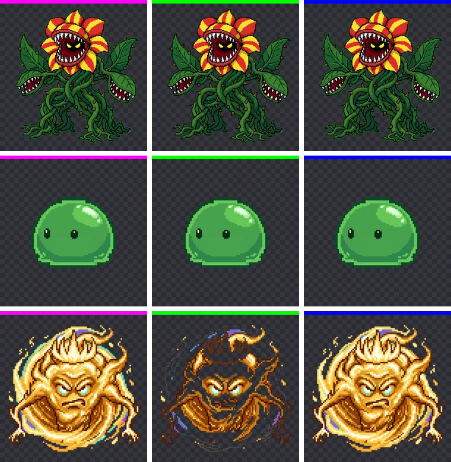

Magenta vs Green vs Blue: Which Background Color Removes Best?
If you're deciding which solid background color to ask an AI image generator for, start with this experiment. We placed the same three characters on magenta, green and blue, removed the background with identical settings and measured, pixel by pixel, how much of each character survived. The short answer: whether the character has an outline mattered as much as the background color.
How the test worked
The test subjects are three pixel-art monsters made with Nano Banana (Gemini). The plant monster has red-and-yellow striped petals and green vines with a dark outline. The slime is a green body wrapped in a dark green outline. The spirit is a glowing gold figure with no outline, cyan eyes and a purple glow. All three were originally generated on magenta, and we used their BGPeel results (default settings) as the starting point.
We placed each transparent PNG back onto pure magenta (#FF00FF), green (#00FF00) and blue (#0000FF), giving nine 2048×2048 images. Each was processed with BGPeel's defaults (auto-detected background color, auto background type), and the output was compared pixel by pixel with the original transparent PNG on three measures:
- Object loss: the share of originally fully opaque pixels that came out more than half transparent. This is how much of the character was eaten.
- Background left: the share of originally fully transparent pixels that kept any opacity. This is how much background survived.
- Color error: the average per-channel difference (on a 0–255 scale) between surviving opaque pixels and their original color.
Note that we did not ask the AI to redraw each character on a new color; we swapped the background under the same drawing. That removes the noise of the AI drawing a slightly different character each time and isolates one thing: how the object's colors relate to the background color. Real AI images carry faint blotches and glows in the background, so real results can be slightly worse than these.
Results
The table below shows object loss. Background left was 0% in all nine cases, and the worst color error (the plant on green) was 0.45 per channel, far below what the eye can see. Because the test backgrounds were perfectly flat, every color was removed cleanly. The only differences were in object loss, and they were concentrated in a single character.
| Character | Magenta | Green | Blue |
|---|---|---|---|
| Plant (outlined) | 0% | 0.92% | 0% |
| Slime (outlined, green body) | 0% | 0% | 0% |
| Spirit (no outline, gold) | 1.13% | 55.02% | 2.39% |

Why the green slime survived a green background
The most surprising result is the slime. Its whole body is green, yet not a single pixel was lost on the green background. There are two reasons.
First, the slime's green is nothing like #00FF00. For vivid backgrounds, BGPeel estimates how much background is mixed into a pixel by checking how far the background's strong channel (G for a green background) rises above its weak channels (R and B). For pure green that gap is 255, but the slime is a muted green with plenty of red and blue, so its gap is less than half of that. It is never judged to be "more than half background" and stays opaque.
Second, and more important, is the dark outline. BGPeel does not delete every background-like color in the image. It starts at the image border and removes only regions connected to the background, and it stops at pixels darker than a set brightness ("Glow minimum brightness", default 80) because those are treated as outlines. The slime and the plant are fully wrapped in dark outlines, so the removal never reached their background-colored interiors.
Why the spirit lost more than half its body on green
The spirit is the opposite case. It is a glowing gold figure with no outline, so nothing stops the removal that starts at the border. Gold and yellow also sit close to green on the color wheel. To clear glows around the background, BGPeel treats colors within a hue range around the background color ("Glow color range", default −85° to +30°) as background. For green (120°) that range is 35° to 150°, and the spirit's gold (about 40° to 55°) falls inside it. The result: 55% of the spirit disappeared along with the background.
The 2.39% loss on blue has the same cause. Around blue (240°) the range is 155° to 270°, which catches the spirit's cyan eyes and highlights (about 165° to 185°). Around magenta (300°) the range is 215° to 330°, which contains neither gold nor cyan, so magenta caused the least damage. The 1.13% lost on magenta is unrelated to hue: those were near-white highlights touching the background, which "Light background detection" treated as a pale glow.
How to choose a background color
- Pick a color far from the object's main colors on the color wheel. Characters and props are mostly red, yellow, green and brown, so magenta is usually the safest choice. For pink or purple characters use green; if a character has lots of both green and pink, consider blue.
- Be extra careful with characters that have no outline. Fire, ghosts, magic effects and glowing spirits have soft edges, and any color close to the background gets eaten. Outlined pixel art is far more forgiving.
- Images you've already made can usually be rescued with settings. For the spirit on green, turning off "Also remove colored glows" cut the loss from 55.02% to 2.88%. See Parts of the object disappear for details.
Put the color code in the prompt
Once you've chosen a color, include both its name and its hex code in the prompt, for example “solid magenta (#FF00FF) background, flat color, no shadow, no gradient”. Even then, the AI won't hit the exact value. The real backgrounds of the three originals in this test were #FC01FB, #FA25FE and #D506D9. BGPeel measures the background color from each image's border, so differences like these don't matter. Wording that works well for each AI tool is covered in Solid background prompts.
Summary
- With a perfectly flat background, magenta, green and blue were all removed completely (0% left).
- What made the difference was how far the object's colors were from the background color, and whether the object had an outline.
- Outlined pixel-art characters barely lost anything even on a similar color, while an unoutlined glowing character lost more than half of itself on a nearby color.
- If you're unsure, start with magenta. It caused the least or equal-least loss for all three characters.